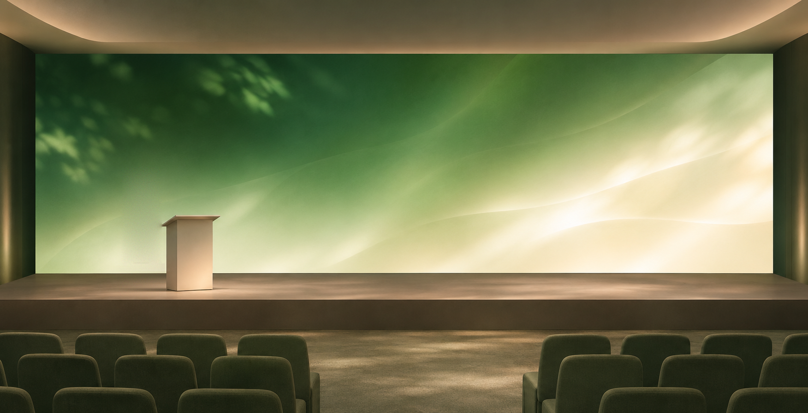
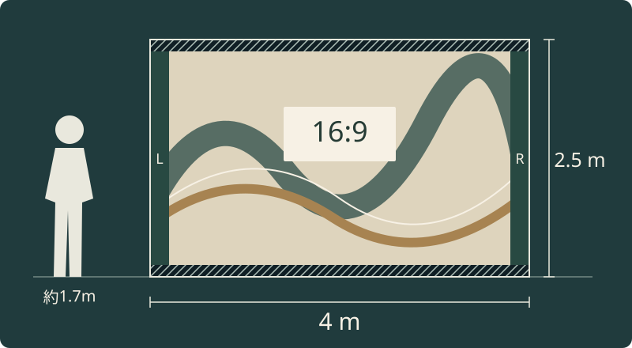
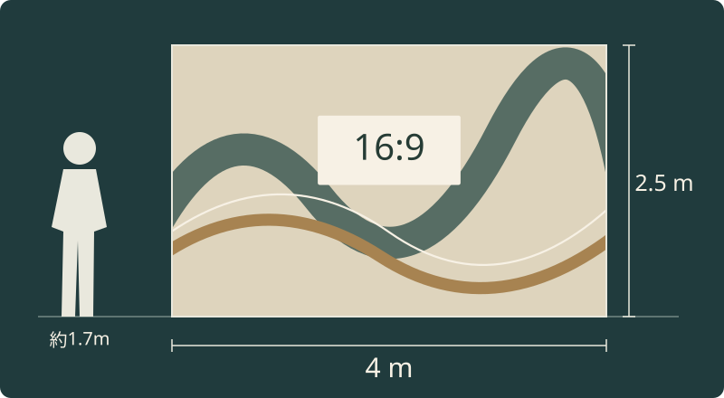

画面をどこまで広げる？
幅・高さと見せたい映像の縦横比を合わせる。
LED ↗EQUIPMENT / 08
屋内LEDパネル
500mm角をつなぎ、会場に合わせた大きな画面へ。
KEY SPECIFICATIONS
 画像を大きく見る ＋
画像を大きく見る ＋01 / ROLE & FLOW
実際の配線・端子構成は案件に合わせて決めます。
STAGE IDEA
ロゴ・登壇者の名前・映像を大きく見せる提案例です。画面は16:9ではないため、素材の見せ方も合わせて設計します。

大きく見る ↗画面と人物の大きさはそのまま。映像の収め方で、余白と見切れが変わります。

説明図を大きく見る ↗
説明図を大きく見る ↗提案例・説明図。4 × 2.5 mの表示面で比率を比べる説明図です。余白の扱いや素材の作り方は、見せたい内容に合わせて決めます。
映像を出すPC・再生機、パネルに適合するLEDプロセッサー、必要な信号ケーブル・電源分配、指定の支持部材を組み合わせます。切り替える映像が複数ある場合はスイッチャーも検討します。
画面の下端高さ、客席からの距離、搬入経路、背面の作業スペースを合わせて計画します。吊り・自立の可否や重り・電源の容量は、この寸法例だけでは決めません。
計算：1枚500×500mm・192×192画素。横8枚×縦5枚の平面例です。
02 / BEFORE YOUR BRIEF
幅・高さと見せたい映像の縦横比を合わせる。
吊り元、床面、客席・通路、背面の作業スペースを整理。
資料の細かな文字か、人物・映像中心かで必要な見え方を考える。
03 / CHOOSING THE RIGHT TOOL
屋内の発表会やステージで、会場サイズに合わせたLED画面を検討する用途に。スクリーンへ投写する方式と異なり、パネル自体が発光します。
DM3.9とは同じ外形でも画素数が異なります。画面寸法だけで映像データを作らず、使用する型式と枚数を先にそろえます。
表示仕様は2023年6月のDiamond資料、外観画像は2018年のDiamond 2.6紹介を参照しています。現場では使用個体と専用支持部材を合わせます。吊り・自立に必要な固定部材や重りは、画面の高さだけでは決めず、会場条件を含めた設置計画で選びます。
画面の幅・高さ、映像素材、会場図面、吊り／自立、搬入経路と使用時間をお聞かせください。本体・周辺機材・搬入出・設営・本番操作・撤去を分けて、必要な範囲を整理します。
04 / RELATED EQUIPMENT